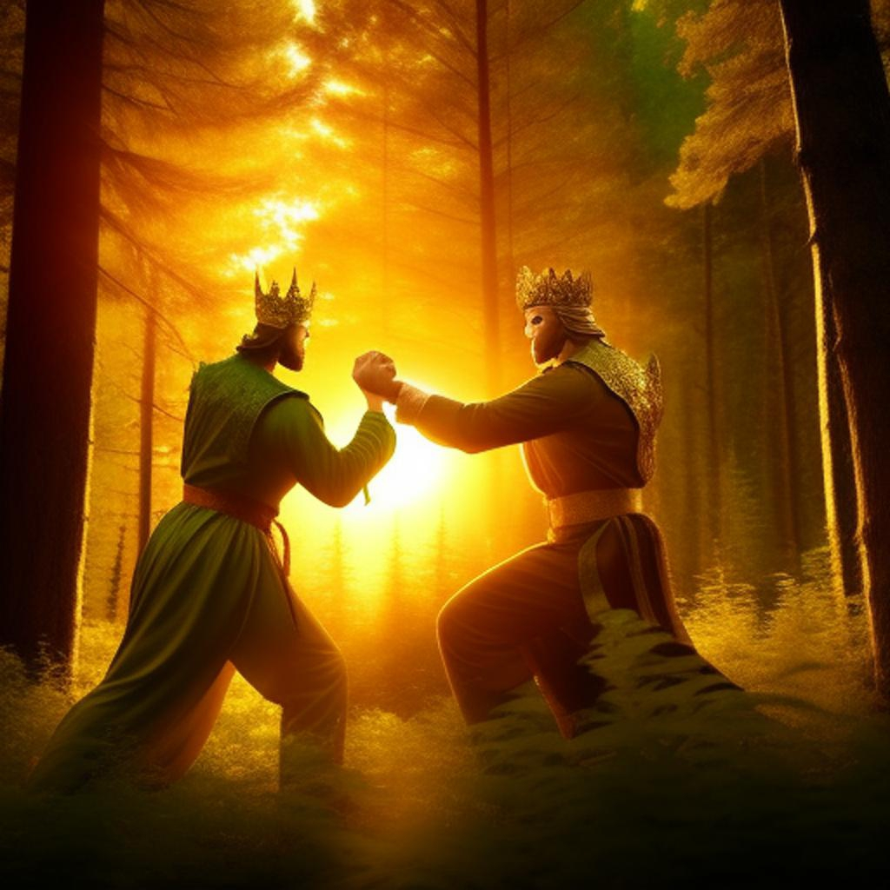

|  |
|
Once upon a time there lived four sons of a poor brahmin who taught them all the Vedas and the holy scriptures. On their parents death, they decided to go and stay with their mother's father. But on reaching there they found that they were unwelcome there and that their cousins were unreceptive to the brothers. Then the brothers decided to each go out into the world and learn a special skill and come back and meet at a common place after a while. So they dispersed and came back to the same place at the appointed time. Each told what he had learnt. The first one said, " I can create flesh of a creature from a single one of the creature". The second one said, " I know how to grow the hair and skin of a creature if it has flesh and bones." The third one said, "I can create the limbs of a creature if its form is complete with skin hair and flesh and bones". The fourth one said, " I know how to give life to that creature once it is complete in form with limbs". So they set off into the forest to find a piece of bone on which they could test their skills. The first one they found was a lion's. So each of them displayed his skill and created a live huge Lion, which as fate would have it, killed all four of them and sped away. Betaal stops and asks King Vikram asks this question: Who among the four brothers is responsible for the death of all of them? Vikram replies with a lot of thought, "The fourth one, as he was the one who gave life to the otherwise dead structure of bones flesh and limbs and hair" |